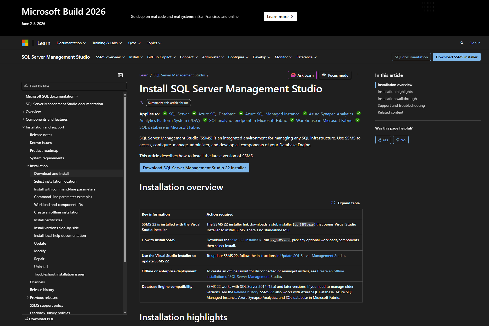
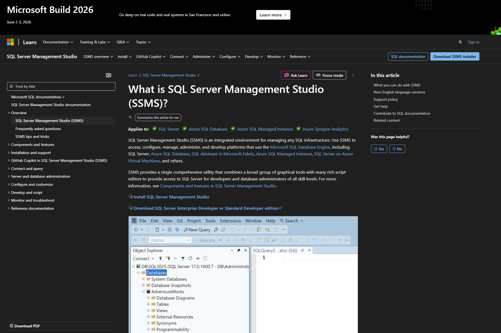
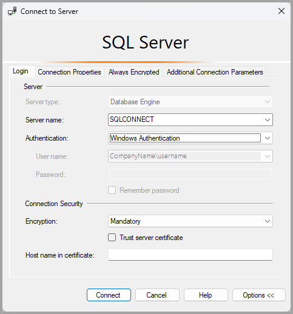
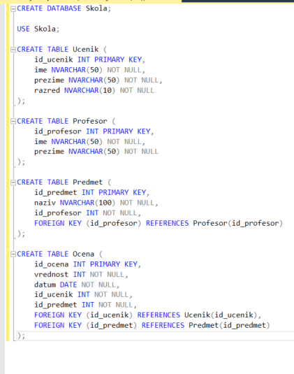
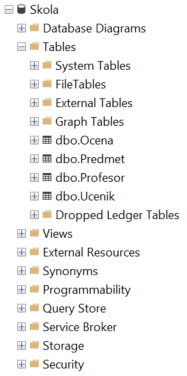

Kreiranje baze iz modela (CREATE TABLE)
U prethodnoj lekciji upoznali smo se sa osnovama SQL jezika i videli da pomoću SQL-a možemo da kreiramo baze, pravimo tabele i radimo sa podacima. Sada pravimo sledeći korak: prolazimo kroz ceo postupak kojim od modela baze dolazimo do stvarne baze podataka u alatu SQL Server Management Studio.
U ovoj lekciji nećemo se zadržati samo na pisanju komandi. Proći ćemo i kroz praktične korake: instalaciju potrebnih alata, povezivanje na server, kreiranje baze i otvaranje prozora za pisanje upita.
Šta nam je potrebno za rad
Da bismo radili u okruženju koje koristimo na kursu, potrebna su nam dva dela. Prvi je Microsoft SQL Server. To je sistem za upravljanje bazom podataka. Drugi je SQL Server Management Studio, skraćeno SSMS. To je alat pomoću kog se povezujemo na server, pregledamo baze i pišemo SQL komande.
Drugim rečima, SQL Server je motor koji čuva i obrađuje podatke, a SSMS je radno okruženje kroz koje tim motorom upravljamo.
Šta bi se desilo kada bismo imali samo SSMS, a ne i SQL Server? Imali bismo alat za rad, ali ne i sistem u kome se podaci zaista čuvaju. A šta ako bismo imali samo SQL Server? Tada bi server postojao, ali bi rad sa njim bio mnogo teži bez odgovarajućeg alata.
Instalacija SQL Server-a
Prvi korak je instalacija SQL Server-a. Ako ga još nemaš na računaru, potrebno je da preuzmeš neko od dostupnih izdanja. Za učenje i vežbanje sasvim je dovoljno SQL Server Express izdanje.
Kada preuzmeš instalacioni fajl, pokreneš ga i pratiš korake za instalaciju. Tokom instalacije važno je da zapamtiš naziv instance servera koji instaliraš, jer će ti taj podatak biti potreban prilikom povezivanja iz SSMS-a.
Instalacija SSMS-a
Drugi korak je instalacija SQL Server Management Studio-a. SSMS se preuzima odvojeno od samog SQL Server-a. Kada instalacija bude završena, u Start meniju ćeš imati dostupan SQL Server Management Studio.


Kada prvi put pokreneš SSMS, otvoriće se prozor za povezivanje na server. Tada počinje praktičan rad sa bazom.
Povezivanje na server
U prozoru za povezivanje obično vidiš nekoliko važnih polja. U polju Server type najčešće ostaje Database Engine, jer se povezujemo na bazu podataka. U polju Server name unosi se naziv server instance, na primer localhost, tačka ili naziv instance kao što je .\SQLEXPRESS, u zavisnosti od toga kako je SQL Server instaliran. U delu za autentifikaciju najčešće se bira Windows Authentication ako koristiš lokalnu instalaciju na svom računaru.

Nakon toga klikneš na dugme Connect. Ako je sve ispravno podešeno, sa leve strane će se otvoriti Object Explorer. To je deo SSMS-a u kome vidiš server, baze podataka i druge objekte. Kasnije ćeš tu pregledati tabele, kolone i ostale elemente baze.
Otvaranje Query Editor-a
Sada prelazimo na kreiranje baze podataka. Iako je bazu moguće kreirati i preko grafičkog interfejsa, u ovom kursu želimo da naglasak bude na SQL jeziku. Zato bazu kreiramo pomoću SQL komande.
Prvo je potrebno da otvorimo novi prozor za upite. To radimo klikom na dugme New Query u SSMS-u. Tada se otvara Query Editor, prostor u kome pišemo i izvršavamo SQL komande.
Zašto je ovo važno? Zato što tek u Query Editor-u naš model prelazi u konkretne komande koje računar može da izvrši.
Kreiranje baze podataka
U Query Editor-u možemo napisati prvu komandu za kreiranje baze podataka. Naš informacioni sistem za školu biće smešten u bazi podataka koja se zove Skola.
CREATE DATABASE Skola;
Kada napišemo ovu komandu, potrebno je da je izvršimo. To se radi klikom na dugme Execute ili odgovarajućom prečicom na tastaturi. Nakon uspešnog izvršavanja, baza Skola će biti kreirana na serveru.
Kada se baza kreira, potrebno je da je izaberemo kao aktivnu bazu u kojoj ćemo dalje raditi.
USE Skola;
Ovom komandom govorimo SQL Server-u da sve naredne komande treba da izvršava u okviru baze Skola.
Prelazak sa modela na tabele
Sada možemo preći na kreiranje tabela koje odgovaraju modelu informacionog sistema za školu. Na osnovu ER dijagrama koji smo ranije napravili, imamo tipove entiteta Ucenik, Profesor, Predmet i Ocena. U relacijskom modelu svaki od ovih tipova entiteta postaje tabela.
Počinjemo od tabele Ucenik.
CREATE TABLE Ucenik (
id_ucenik INT PRIMARY KEY,
ime NVARCHAR(50) NOT NULL,
prezime NVARCHAR(50) NOT NULL,
razred NVARCHAR(10) NOT NULL
);
Ovde definišemo naziv tabele i njene kolone. Kolona id_ucenik je primarni ključ. Ostale kolone predstavljaju atribute tipa entiteta Ucenik. Korišćenjem NOT NULL naglašavamo da te vrednosti moraju postojati za svaki red.
Nakon toga kreiramo tabelu Profesor.
CREATE TABLE Profesor (
id_profesor INT PRIMARY KEY,
ime NVARCHAR(50) NOT NULL,
prezime NVARCHAR(50) NOT NULL
);
Zatim kreiramo tabelu Predmet. Pošto u našem modelu svaka pojava tipa entiteta Predmet mora biti povezana sa tačno jednom pojavom tipa entiteta Profesor, u tabeli Predmet dodajemo strani ključ id_profesor.
CREATE TABLE Predmet (
id_predmet INT PRIMARY KEY,
naziv NVARCHAR(100) NOT NULL,
id_profesor INT NOT NULL,
FOREIGN KEY (id_profesor) REFERENCES Profesor(id_profesor)
);
Ova tabela pokazuje jednu veoma važnu stvar. CREATE TABLE ne služi samo da definišemo kolone, već i da uvedemo ograničenja i veze između tabela. U ovom slučaju strani ključ obezbeđuje da vrednost u koloni id_profesor mora odgovarati profesoru koji već postoji u tabeli Profesor.
Na kraju kreiramo tabelu Ocena. U našem modelu svaka ocena pripada tačno jednom učeniku i tačno jednom predmetu, pa tabela Ocena sadrži dva strana ključa.
CREATE TABLE Ocena (
id_ocena INT PRIMARY KEY,
vrednost INT NOT NULL,
datum DATE NOT NULL,
id_ucenik INT NOT NULL,
id_predmet INT NOT NULL,
FOREIGN KEY (id_ucenik) REFERENCES Ucenik(id_ucenik),
FOREIGN KEY (id_predmet) REFERENCES Predmet(id_predmet)
);
Na ovaj način smo iz ER modela prešli u konkretan relacijski model implementiran u SQL Server-u. Svaka tabela odgovara jednom delu sistema, a strane ključeve koristimo da sačuvamo veze koje smo ranije definisali na dijagramu.
Redosled je važan
U ovom trenutku učenici često prave tipične greške. Jedna od njih je da pokušaju da kreiraju tabelu sa stranim ključem pre nego što kreiraju tabelu na koju se taj ključ odnosi. Na primer, ako pokušamo da kreiramo tabelu Predmet pre tabele Profesor, SQL Server neće moći da uspostavi vezu.
Druga česta greška je da se zaboravi komanda USE, pa se tabela nenamerno kreira u pogrešnoj bazi. Takođe, može se desiti da naziv kolone ili tabele u FOREIGN KEY delu nije potpuno isti kao u definiciji kolone. Zato je važno raditi pažljivo i proveravati svaki korak.
Ako ti ovaj proces deluje dugo, to je sasvim normalno. Baza se u praksi ne pravi jednim klikom, već kroz niz logičnih koraka. Prvo analiziramo sistem, zatim pravimo ER dijagram, potom taj model prevodimo u tabele, a na kraju pomoću SQL-a tu strukturu zaista kreiramo u bazi. Najčešće greške su pogrešan redosled kreiranja tabela, zaboravljena USE komanda i netačno napisani nazivi kolona u stranim ključevima. A ovako to izgleda u SQL Server Management Studio-u:

Provera rezultata
Nakon izvršavanja ovih komandi, tabele će se pojaviti u Object Explorer-u unutar baze Skola. Nekada je potrebno osvežiti prikaz desnim klikom na folder Tables i izborom opcije Refresh kako bi novokreirane tabele postale vidljive.
Kako bismo proverili da li smo sve dobro uradili? Treba da vidimo bazu Skola, a unutar nje tabele Ucenik, Profesor, Predmet i Ocena. Ako neka tabela nedostaje, treba proveriti da li je komanda uspešno izvršena i da li je redosled kreiranja bio ispravan.

Šta sledi dalje
Sve što smo radili u prethodnim lekcijama sada dobija svoj konkretan oblik. Model koji smo crtali više nije samo plan na papiru, već postaje prava baza podataka sa tabelama i vezama.
U narednim lekcijama počećemo da unosimo podatke u tabele koje smo kreirali i pisaćemo SQL upite pomoću kojih ćemo moći da pretražujemo informacioni sistem za školu.
Instaliraj SQL Server i SQL Server Management Studio, poveži se na lokalni server i kreiraj bazu podataka Skola.
Nakon toga otvori Query Editor i napiši CREATE TABLE komande za tabele Ucenik, Profesor, Predmet i Ocena.
Obrati pažnju na redosled kreiranja tabela i na pravilno definisane primarne i strane ključeve.
Kao proveru, na kraju otvori Object Explorer i proveri da li su sve tabele uspešno kreirane.